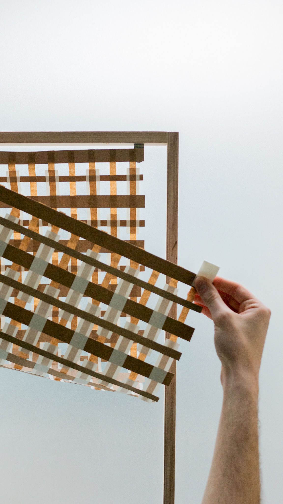
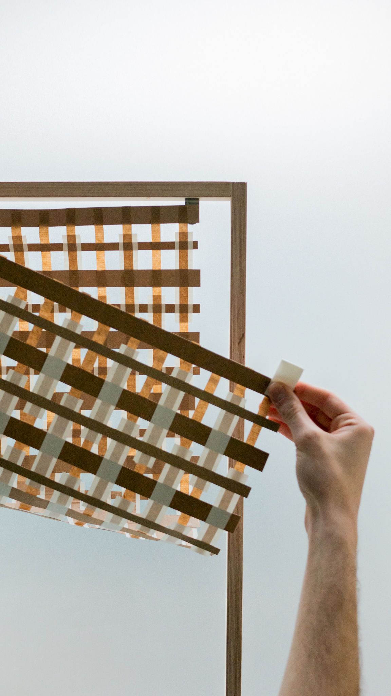

OMBRE DE PAPIER,
- 2022 -
En collaboration avec Raphaël
Flipo, nous avons mené un travail
de recherche sur le papier et les
matières courante de l’exercice
de la maquette. Nous ne voulions
pas dessiner et nous laisser
surprendre par la matière et ces
qualités intrinsèques. Nous avons
directement expérimenté en
travaillant la matière.
Matières sélectionnées : - carton
- papier - calque - agrafe - petites
visseries non modifiées -
polystyrène - scotch - colle -
Nous avons voulu mettre en avant
les qualités esthétiques et plastiques
des matériaux considérés comme
simple ou réservés à la maquette.
- Quelles sont les caractéristiques
esthétiques fortes et uniques du
papier du carton et du scotch ?
- La translucidité du papier du
scotch et de certains cartons nous
a directement apparu comme un
aspect intéressant de ces matériaux.
CONTACT


 
